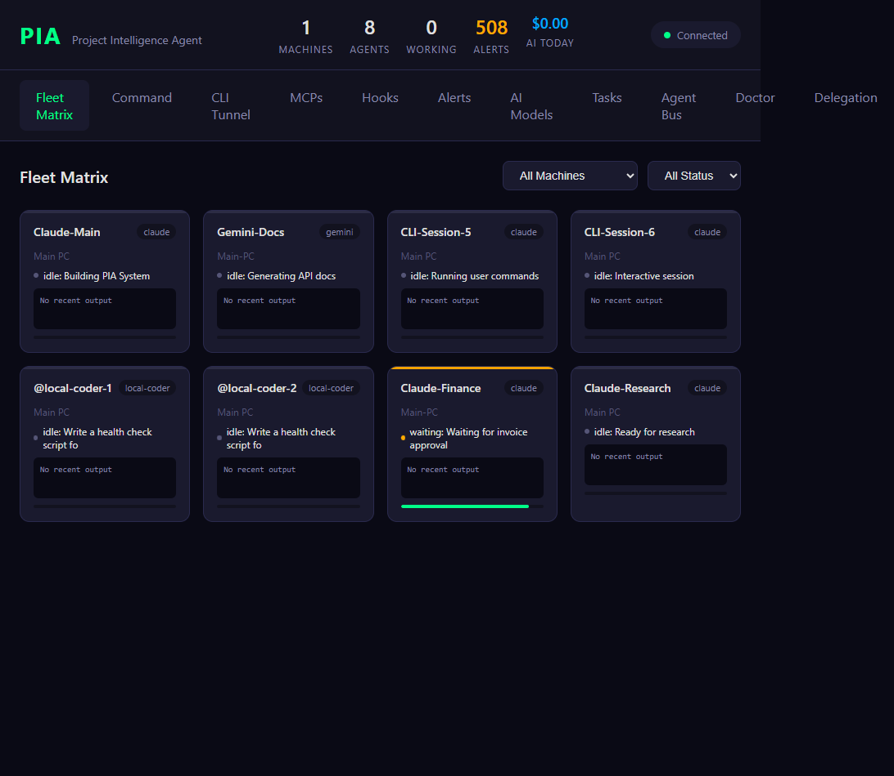
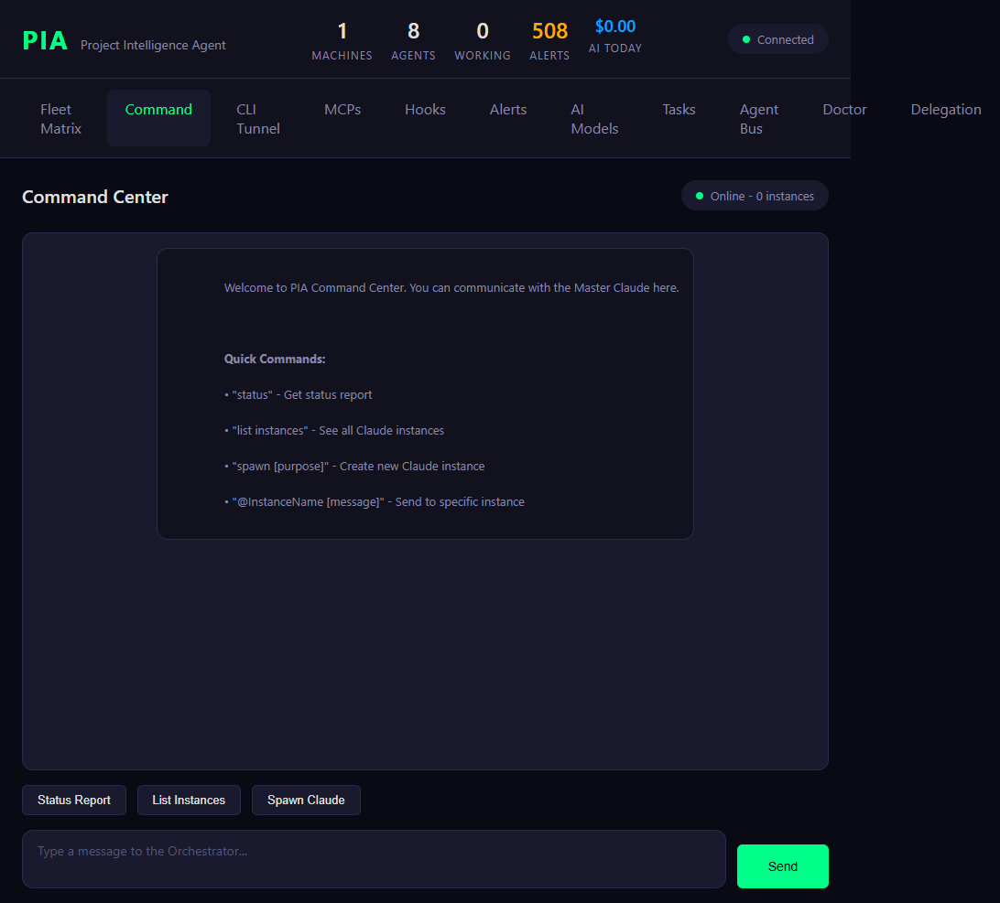
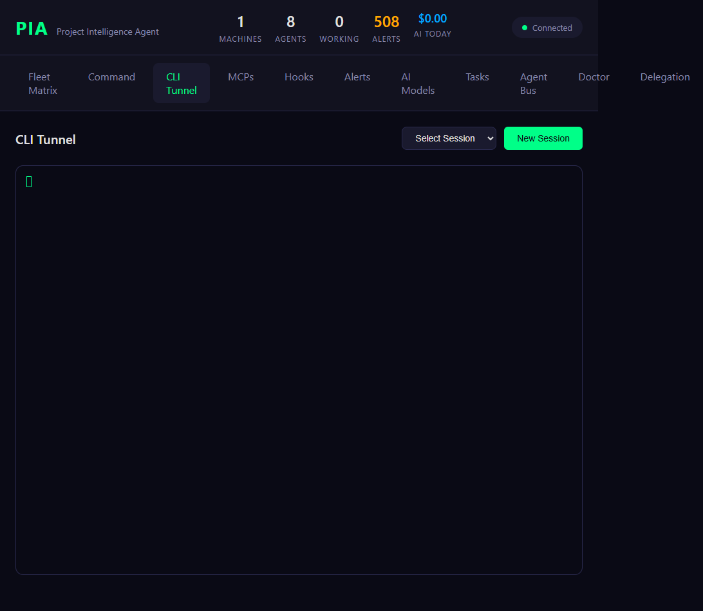
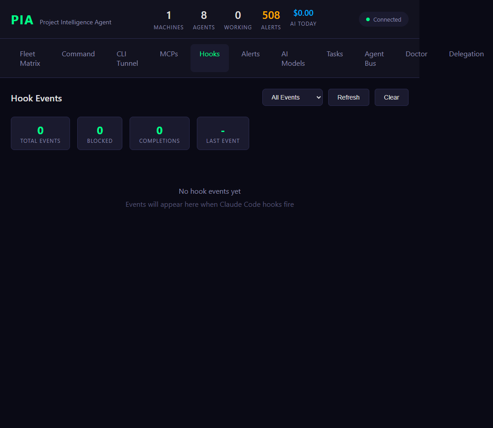
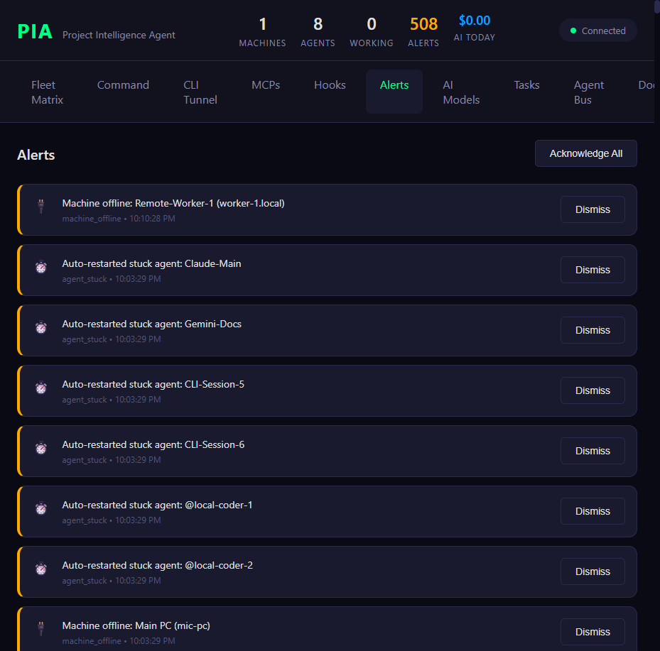
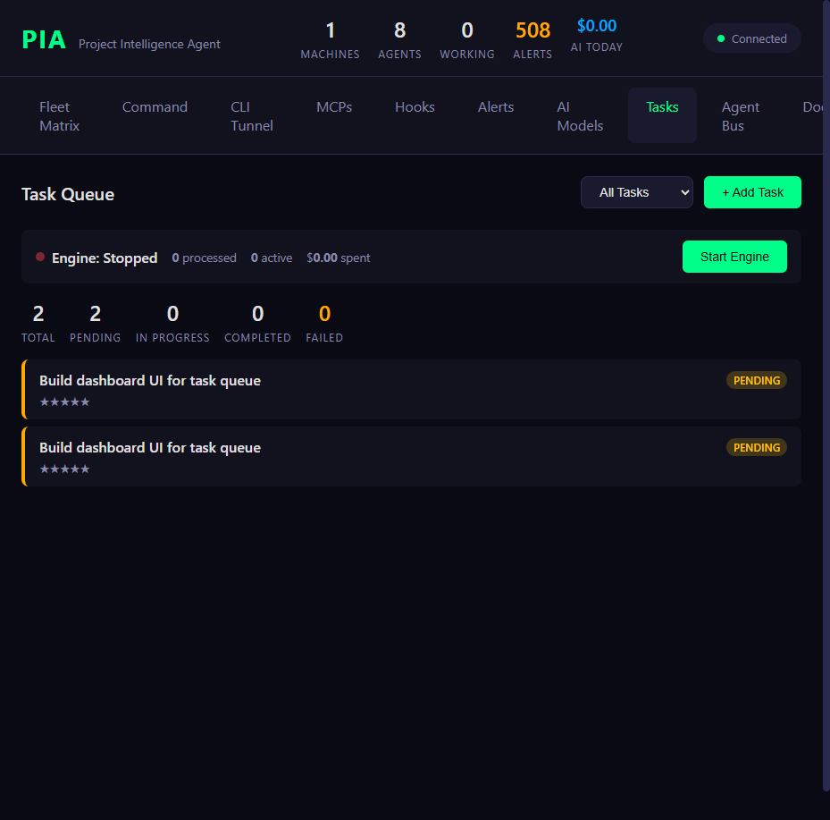
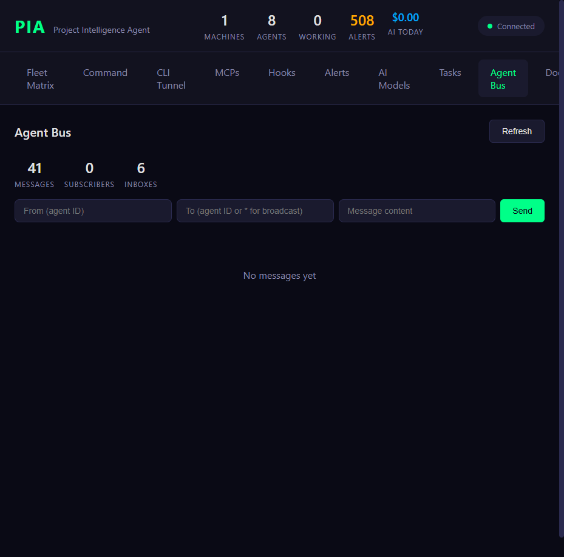
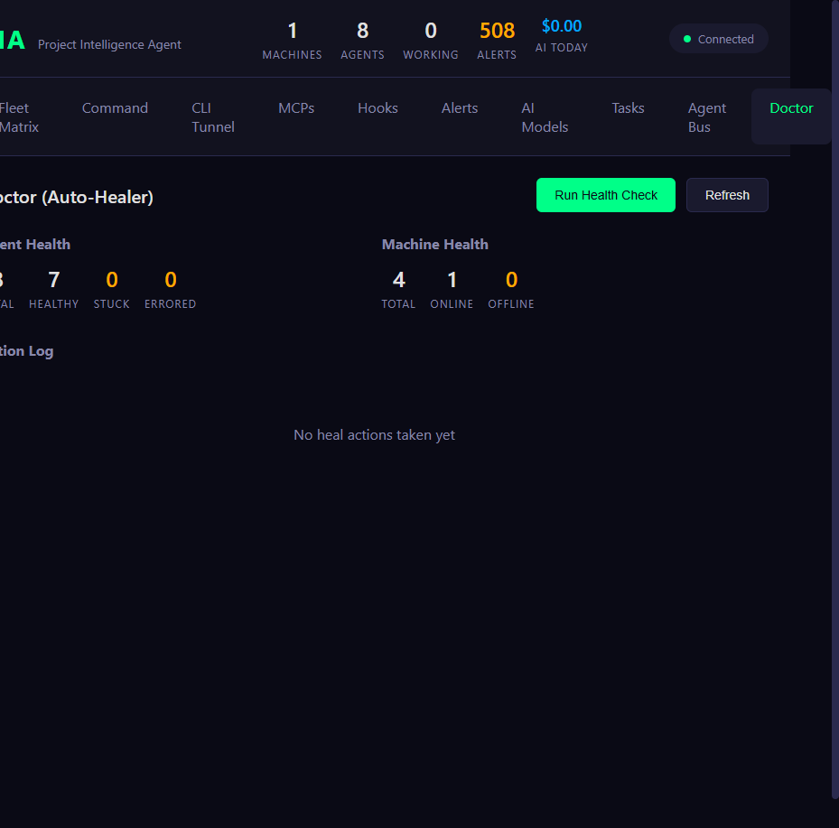

PIA VISOR - Machine #1 (Hub: izzit7, localhost:3000)
Full screenshot audit of every tab in the live PIA VISOR dashboard.
1. Fleet Matrix Beyond Wireframe
LIVE: Fleet Matrix (localhost:3000/#fleet)

Status: Fully Operational
Shows 8 agents across machines: Claude-Main, Gemini-Docs, CLI-Session-5, CLI-Session-6, @local-coder-1, @local-coder-2, Claude-Finance (waiting), Claude-Research. Stats bar shows 1 Machine, 8 Agents, 0 Working, 508 Alerts, $0.00 AI Today. WebSocket connected.
Shows 8 agents across machines: Claude-Main, Gemini-Docs, CLI-Session-5, CLI-Session-6, @local-coder-1, @local-coder-2, Claude-Finance (waiting), Claude-Research. Stats bar shows 1 Machine, 8 Agents, 0 Working, 508 Alerts, $0.00 AI Today. WebSocket connected.
- Agent cards display name, type (claude/gemini/local-coder), machine, status, and last output
- Filter dropdowns for machine and status
- Claude-Finance shows "waiting" state with green progress bar
2. Command Center Partial Match
LIVE: Command Center (localhost:3000/#command)

Status: Functional but Basic
The wireframe shows a "Chat" tab with machine-to-machine messaging, sidebar with Alive Repos, Machines, and Recent Jobs. The live Command Center has:
The wireframe shows a "Chat" tab with machine-to-machine messaging, sidebar with Alive Repos, Machines, and Recent Jobs. The live Command Center has:
- Chat-like interface with text input and Send button
- Quick command buttons: Status Report, List Instances, Spawn Claude
- Shows "Online - 0 instances" (no orchestrator running)
- Missing vs wireframe: No sidebar with Alive Repos, Machines, Recent Jobs
- Missing vs wireframe: No machine dropdown (broadcast/direct messaging)
- Missing vs wireframe: No message history with incoming/outgoing styling
3. CLI Tunnel Matches Wireframe
LIVE: CLI Tunnel (localhost:3000/#tunnel)

Status: Fully Matches Wireframe
The wireframe shows a CLI tab with: session selector dropdown, "New Session" button, terminal area, and toolbar with PowerShell/Claude/CMD buttons. The live version has:
The wireframe shows a CLI tab with: session selector dropdown, "New Session" button, terminal area, and toolbar with PowerShell/Claude/CMD buttons. The live version has:
- Session dropdown with 44 active sessions (powershell, claude, cmd types)
- "New Session" button
- Terminal display area with cursor
- Supports PowerShell, CMD, and Claude session types
- Close match! This is the most wireframe-aligned tab
4. MCP Servers Beyond Wireframe
LIVE: MCP Servers (localhost:3000/#mcps)

Status: Additional Feature
Not in wireframe spec. Shows 8 installed MCPs (browsermcp, firebase, google-drive, gmail, google-calendar, google-keep-local, cerebra-legal, context7) and 15 available MCPs. Each has Test/Remove or Install buttons. Categorized by type (Core, Database, Development, Communication, Storage).
Not in wireframe spec. Shows 8 installed MCPs (browsermcp, firebase, google-drive, gmail, google-calendar, google-keep-local, cerebra-legal, context7) and 15 available MCPs. Each has Test/Remove or Install buttons. Categorized by type (Core, Database, Development, Communication, Storage).
5. Hook Events Beyond Wireframe
LIVE: Hook Events (localhost:3000/#hooks)

Status: Additional Feature (0 events currently)
Not in wireframe spec. Dashboard for Claude Code hooks with event filter (SessionStart, PreToolUse, PostToolUse, Agent Done), stats (Total Events, Blocked, Completions, Last Event), Refresh/Clear buttons. Currently empty - "No hook events yet."
Not in wireframe spec. Dashboard for Claude Code hooks with event filter (SessionStart, PreToolUse, PostToolUse, Agent Done), stats (Total Events, Blocked, Completions, Last Event), Refresh/Clear buttons. Currently empty - "No hook events yet."
6. Alerts Partial Match
LIVE: Alerts (localhost:3000/#alerts)

Status: Functional but Different from Wireframe Security Tab
The wireframe has a "Security" tab with: Tracked Connections (IP, type, req count), Security Events (brute force, unknown IP, etc.), Block/Allow buttons. The live Alerts tab has:
The wireframe has a "Security" tab with: Tracked Connections (IP, type, req count), Security Events (brute force, unknown IP, etc.), Block/Allow buttons. The live Alerts tab has:
- 508 alerts total with "Acknowledge All" button
- Alert types: machine_offline, agent_stuck
- Each alert has Dismiss button
- Missing vs wireframe: No IP tracking panel with TAILSCALE/LOCALHOST/BLOCKED tags
- Missing vs wireframe: No Block/Allow/Unblock actions on IPs
- Missing vs wireframe: No security event categorization (BRUTE FORCE, PORT SCAN, etc.)
- Gap: The wireframe Security tab is significantly more sophisticated than the current Alerts
7. AI Models Beyond Wireframe
LIVE: AI Models (localhost:3000/#ai)

Status: Fully Operational, Additional Feature
Not in wireframe spec. Shows cost tracking (Today/Week/Month), $10.00 budget remaining, Provider Status (Ollama available, Claude Haiku/Sonnet not configured), Recent Usage table, Budget Settings with daily/monthly limits.
Not in wireframe spec. Shows cost tracking (Today/Week/Month), $10.00 budget remaining, Provider Status (Ollama available, Claude Haiku/Sonnet not configured), Recent Usage table, Budget Settings with daily/monthly limits.
8. Task Queue Partial Match
LIVE: Task Queue (localhost:3000/#tasks)

Status: Functional but Needs Work
The wireframe mentions a "Tasks" tab but doesn't detail it. The live version has:
The wireframe mentions a "Tasks" tab but doesn't detail it. The live version has:
- Engine status (Stopped/Running) with Start Engine button
- Stats: 2 Total, 2 Pending, 0 In Progress, 0 Completed, 0 Failed
- Two duplicate tasks: "Build dashboard UI for task queue" (both PENDING)
- Add Task button
- Issue: Duplicate tasks should be cleaned up
9. Agent Bus Beyond Wireframe
LIVE: Agent Bus (localhost:3000/#bus)

Status: Operational, Additional Feature
Not in wireframe spec (wireframe mentions "Agent Bus" as a communication channel card but not a full tab). Shows 41 Messages, 0 Subscribers, 6 Inboxes. Has From/To/Message input fields for sending inter-agent messages.
Not in wireframe spec (wireframe mentions "Agent Bus" as a communication channel card but not a full tab). Shows 41 Messages, 0 Subscribers, 6 Inboxes. Has From/To/Message input fields for sending inter-agent messages.
10. Doctor (Auto-Healer) Beyond Wireframe
LIVE: Doctor (localhost:3000/#doctor)

Status: Operational, Additional Feature
Not in wireframe spec. Shows Agent Health (8 total, 7 healthy, 0 stuck, 0 errored), Machine Health (4 total, 1 online, 0 offline). "Run Health Check" and "Refresh" buttons. Heal Action Log (empty - "No heal actions taken yet").
Not in wireframe spec. Shows Agent Health (8 total, 7 healthy, 0 stuck, 0 errored), Machine Health (4 total, 1 online, 0 offline). "Run Health Check" and "Refresh" buttons. Heal Action Log (empty - "No heal actions taken yet").
11. Delegation Beyond Wireframe
LIVE: Delegation Rules (localhost:3000/#delegation)

Status: Operational, Additional Feature
Not in wireframe spec. Shows delegation rules for agent role boundaries and cost-aware routing. Rules enforce capability boundaries, cross-role operations, and quality checks.
Not in wireframe spec. Shows delegation rules for agent role boundaries and cost-aware routing. Rules enforce capability boundaries, cross-role operations, and quality checks.